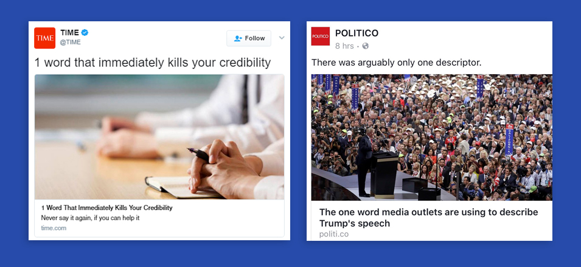
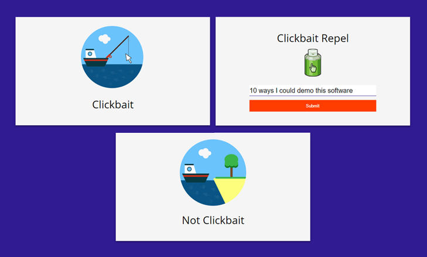

Section is a work in progress. :)
What is a Clickbait?
A clickbait headline, which on the internet could be found in a post shared on social media, essentially follows a sentence-structure that can lure people in with ad revenue. The news that articles with clickbait headlines provide is often poorly researched, but usually contains very little information. Unfortunately, this has become a standard for presenting news online, as this allows news outlets to rake in ad revenue even with very little to no actual news.

The Problem
Whether or not the information presented through a clickbait is valuable enough, the user is still being manipulated. Probabilstically, for people who are browsing social media for news of actual value, the whole experience is becoming increasingly frustrating.
Even from a UX perspective, clickbaits waste the user's time, and take them away from the given news curation platform, for instance, a social media news feed If the user has limited time to browse news, it essentially wastes the effort and algorithms that go into finding news relevant to the user's interests.
Our Solution
Demo GitHubWe trained a sentence-based text-classification model on our own data, which created a distinction between clickbait headlines and normally structured news headlines. We then constructed an API around this classifier, which can be accessed using a GET or POST HTTP request.

What's Next
- Making the classifier robust
The API's success largely depends on how fast it can process requests and respond. Currently, the API is not fast enough to produce responses for a large number of requests, and that is something that could be improved by saving our classifier as loadable object (Pickle). - Chrome Extension
Our initial vision for the project culminates into a chrome extension that can parse news feeds on social media, detect clickbait headlines, and provide the formation being concealed through the clickbait, or directing the user to a more reputable source that can provide more valuable information.